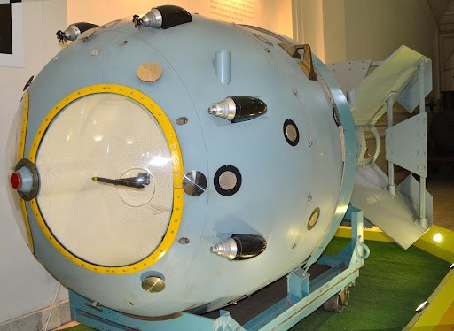
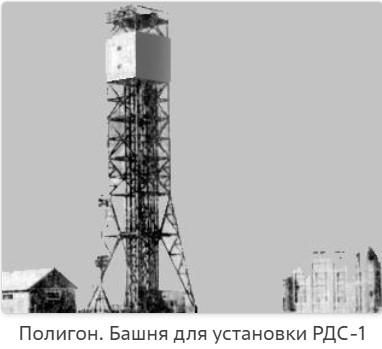
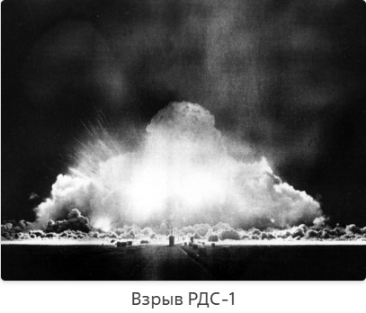
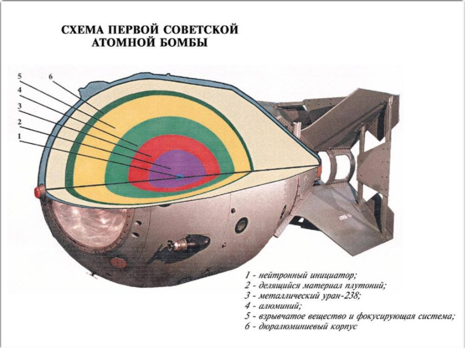
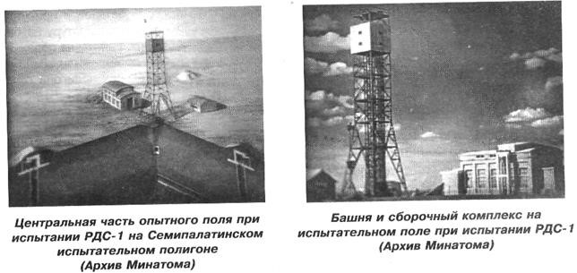
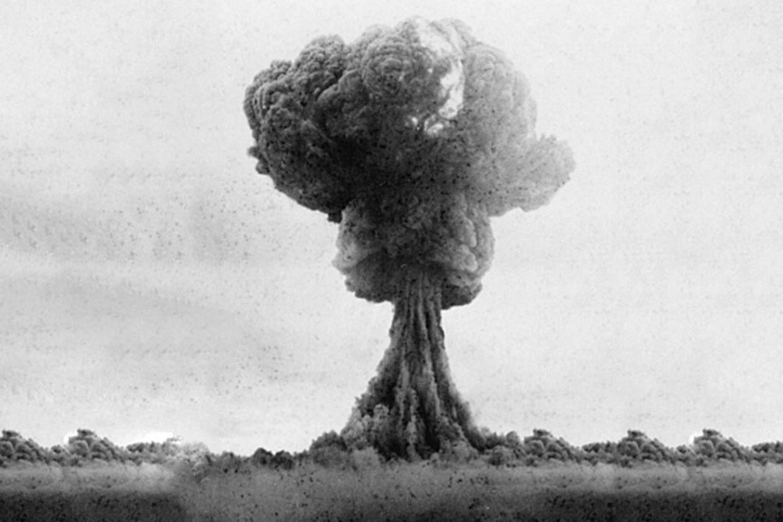

РДС-1 - первая советская атомная бомба. Как точно расшифровывается эта аббревиатура, неизвестно, утверждают,
что в документах указывалась расшифровка «реактивный двигатель специальный «С». Но в народе первая атомная
бомба РДС-1 получила характерное прозвище «Россия делает сама», «Родина дарит Сталину».
Атомный проект:
Советский атомный проект решил использовать американские прототипы, чья работоспособность была доказана,
также опираясь на разведывательную информацию. Хотя советские специалисты видели возможности для улучшения,
руководство требовало гарантированно рабочую бомбу к первому испытанию. Разработка РДС-1 началась с
“Тактико-технического задания” от 1 июля 1946
года, которое оговаривало ядерное горючее, способ его перевода
через критическое состояние, габариты и требования к взрывателю. КБ-11 поручили создать 2 варианта бомб:
плутониевую со сферическим обжатием и урановую с пушечным сближением, с последующими государственными
испытаниями. Первая бомба разрабатывалась для размещения в бомболюке самолета ТУ-4, имела “каплевидную”
форму диаметром 1,5 метра, длиной 3,3 метра и массой 4,7 тонны.


Конструктивно первая атомная бомба состояла из следующих принципиальных составных узлов:
- ядерного заряда;
- взрывного устройства и системы автоматики подрыва заряда с системами предохранения;
- баллистического корпуса авиабомбы, в котором размещались ядерный заряд и автоматика подрыва.

Внутри корпуса РДС-1 находился ядерный заряд из плутония мощностью 20 килотонн и блоки автоматики. Заряд был
многослойным, где плутоний сжимался сферической детонационной волной для достижения надкритического
состояния. В центре заряда располагался плутоний из 2 полусфер и нейтронный инициатор (детонатор).
Поверх плутония располагались 2 слоя взрывчатки: внутренний из 2 полусфер и внешний, собранный из
отдельных элементов, для создания сферической детонационной волны. Автоматика обеспечивала взрыв в нужной
точке, с дублирующей схемой и резервным ударным взрывателем на случай отказа высотного.
Испытание:
Ровно в 7 часов утра 29 августа 1949
года вся местность на Семипалатинском полигоне озарилась ослепительным
светом, который ознаменовал, что СССР успешно завершил разработку и испытание первой атомной бомбы. Мощность
взрыва составила 20 килотонн в тротиловом эквиваленте.
Через 20 минут после взрыва к центру поля были направлены 2 танка, оборудованные свинцовой защитой,
для проведения радиационной разведки и осмотра центра поля.
Разведкой было установлено, что все сооружения в центре поля снесены. На месте башни образовалась
воронка,
почва в центре поля оплавилась и образовалась сплошная корка шлака. Гражданские здания и промышленные
сооружения были полностью или частично разрушены. Очевидцам представилась страшная картина великого
побоища.
Овладев технологиями создания ядерного оружия, наша страна на протяжении многих лет обеспечивала
военно-оборонительный баланс между двумя ведущими державами мира – СССР и США. Ядерный щит, первым
элементом
которого стало изделие РДС-1, и по сей день защищает Россию.
В настоящее время макет заряда РДС-1, пульт, сигналом с которого был подорван этот заряд, и корпус
авиационной бомбы, изготовленный для него, экспонируется в музее ядерного оружия в городе Сарове.
Источник информации: РИА Новости (https://ria.ru/20211201/bomba-1761248563.html)

